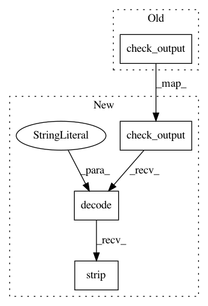

1fbc8fb371d252916d4934b964623b3be3059367,src/python/pants/pantsd/process_manager.py,ProcessManager,get_subprocess_output,#Any#Any#Any#,310
Before Change
kwargs.setdefault("stderr", subprocess.STDOUT)
try:
return subprocess.check_output(command, **kwargs)
except (OSError, subprocess.CalledProcessError) as e:
subprocess_output = getattr(e, "output", "").strip()
raise cls.ExecutionError(str(e), subprocess_output)
After Change
kwargs.setdefault("stderr", subprocess.STDOUT)
try:
return subprocess.check_output(command, **kwargs).decode("utf-8").strip()
except (OSError, subprocess.CalledProcessError) as e:
subprocess_output = getattr(e, "output", "").strip()
raise cls.ExecutionError(str(e), subprocess_output)
In pattern: SUPERPATTERN
Frequency: 3
Non-data size: 4
Instances
Project Name: pantsbuild/pants
Commit Name: 1fbc8fb371d252916d4934b964623b3be3059367
Time: 2018-08-01
Author: ericarellano@me.com
File Name: src/python/pants/pantsd/process_manager.py
Class Name: ProcessManager
Method Name: get_subprocess_output
Project Name: pantsbuild/pants
Commit Name: 9acbac7fa774d85f4a6fa68091c22115ebfdc044
Time: 2018-07-31
Author: ericarellano@me.com
File Name: contrib/node/tests/python/pants_test/contrib/node/subsystems/test_node_distribution.py
Class Name: NodeDistributionTest
Method Name: test_bootstrap
Project Name: pantsbuild/pants
Commit Name: 9acbac7fa774d85f4a6fa68091c22115ebfdc044
Time: 2018-07-31
Author: ericarellano@me.com
File Name: contrib/go/tests/python/pants_test/contrib/go/subsystems/test_go_distribution.py
Class Name: GoDistributionTest
Method Name: test_bootstrap